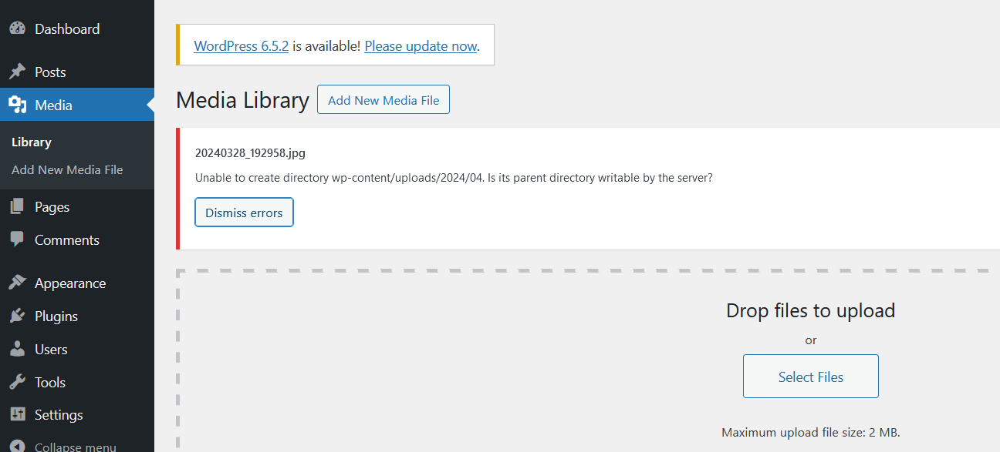
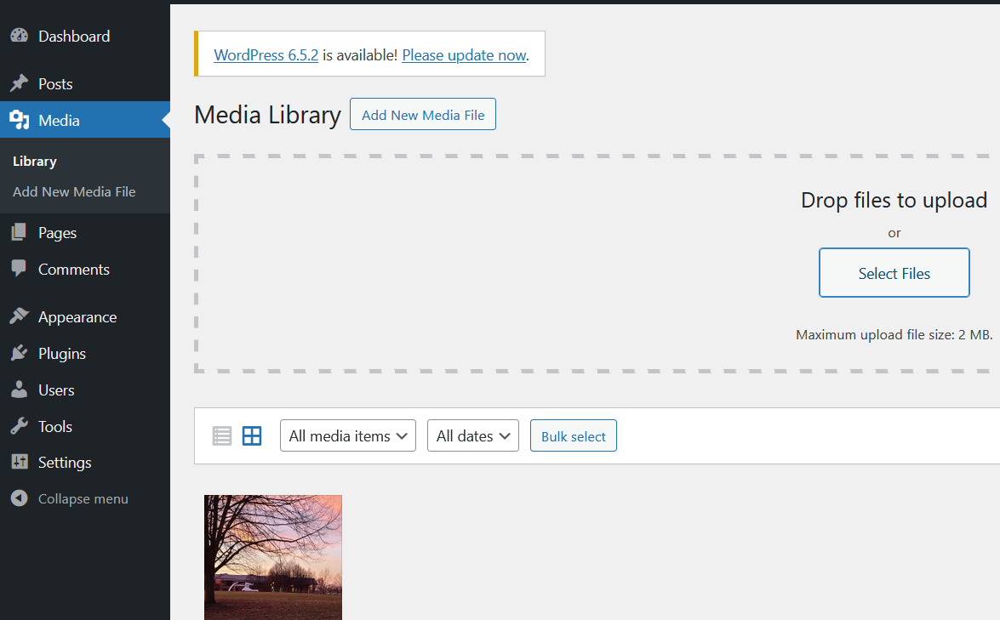

George D. Crochiere
COMM-429 Front End Development
There are various reasons as to why one may create a personalized blog, with most professional ones being hosted on their own server. This individual hosting allows for more control over one's own data. While the initial server may require a bit of programming setup, the installation of WordPress can be used to make a personalized blog easier. WordPress can be used to allow for a larger focus on creativity without the worry of knowing how to program every component.
With Linux-based systems being one of the largest options for operating systems on servers, let's assume you've created a Linux-based server and successfully installed WordPress with their installation guide; great job! However, as you start playing around with WordPress, you might encounter a situation where you can't upload any images.

Upload Error in WordPress due to permissions.
Images are essential to several blog posts to allow for better engagement with viewers and to provide a visualization or more clear description of what you are writing about in your paragraph. In this article, we will go over a potential fix on how to get image uploads working.
If you need help in terms on developing a server to run WordPress on, the following articles by DigitalOcean provides several ways to establish a server. This example utilized the following:
For the purposes of this article, it'll be assumed that the following is how your WordPress installation in set up. It will be assumed that the domain you are using is example.com, using a Virtual Host housed in the folder example:
/var/www
│
├── example
│ ├── blog
│ │ ├── index.php
│ │ ├── license.txt
│ │ ├── readme.html
│ │ ├── wp-activate.php
│ │ ├── wp-admin
│ │ ├── wp-blog-header.php
│ │ ├── wp-comments-post.php
│ │ ├── wp-config.php
│ │ ├── wp-content
│ │ ├── wp-cron.php
│ │ ├── wp-includes
│ │ ├── wp-links-opml.php
│ │ ├── wp-load.php
│ │ ├── wp-login.php
│ │ ├── wp-mail.php
│ │ ├── wp-settings.php
│ │ ├── wp-signup.php
│ │ ├── wp-trackback.php
│ │ └── xmlrpc.php
│ ├── index.html
│ └── user_list.php
└── html
└── index.html
This example houses the WordPress installation within the
blogdirectory, which only adds "/blog" to the URL. WordPress also has the option to be installed directly in the Virtual Host folder. Regardless of which folder is utilized for WordPress, the folder will be called the parent directory.
This tutorial was made for WordPress version 6.5.
To recap, the error present occurs when one tries to upload an image, yet WordPress doesn't have the permissions to upload. This return the following error message:
Unable to create directory wp-content/uploads/<year>/<month>. Is the parent directory writable by the server?
Upload Error in WordPress due to permissions.
Now that you have your WordPress installed on your server, let's discuss how the error occured. When the WordPress was initially installed, it was likely done while the installer was utilizing the root user of the server. Regardless of exactly how it was done, the directories that contain WordPress data need to be modified.
For this example, we can view the file permissions by first navigating to the /var/www/example directory, then listing the items with permission data.
cd /var/www/example
ls -al
This produces the following results:
total 20
drwxr-xr-x 3 root root 4096 Apr 15 15:07 .
drwxr-xr-x 4 root root 4096 Apr 11 18:50 ..
drwxr-xr-x 5 root root 4096 Apr 15 15:15 blog
-rwxr-xr-x 1 root root 151 Apr 2 18:30 index.html
-rwxr-xr-x 1 root root 416 Apr 9 17:58 user_list.php
This outputs data associated with content in the directory, with the -l tag, as specified in this StackOverflow thread, giving the following data regarding each file:
The main issue lies with the directory's owner and group data. Additionally, while this is the output for this specific instance, there is a chance that the permissions for each file is not the same, or is not what is needed for WordPress to function.
To fix this issue, we need to modify the file group, file owner, and file permissions for the directory and its components. This can be done with a couple of commands.
For the commands to be executed, we need to be in the directory above the WordPress directory. In this examples case, the blog directory is the direcctory that contains the WordPress files. This means we need to be located in the directory example, which contains the blog directory. If the VirtualHost folder example contains the WordPress files directly, then we need to be in the www directory.
In terms of file permissions, while WordPress requires its files to have the permission levels of 644, this post will set the permission levels to 755. This can be changed later on with the same command, only replacing the number. More information on how the permission number is generated can be found here.
cd /var/www/example
blog, you can change the folder's namesudo chown -R www-data blog/
sudo chgrp -R www-data blog/
sudo chmod -R 755 blog/
systemctl restart apache2
You can now go back into WordPress, refresh the page, and start uploading items into the media page.

WordPress with the ability to upload media.
If the above solution does not work, there are other solutions present. Check out this possible option that focuses on database connections, but will also require the use of phpMyAdmin.
Images can always help improve a blog post or webpage by providing additional visual details to media content, but it typically helps if images can be added to the page in the first place. While programming a site will prevent this issue from occuring with HTML pages as a programmer, using WordPress can open new opportunites to making creative projects, or providing access to creative front-ends without worry about programming each section.
Happy Coding!